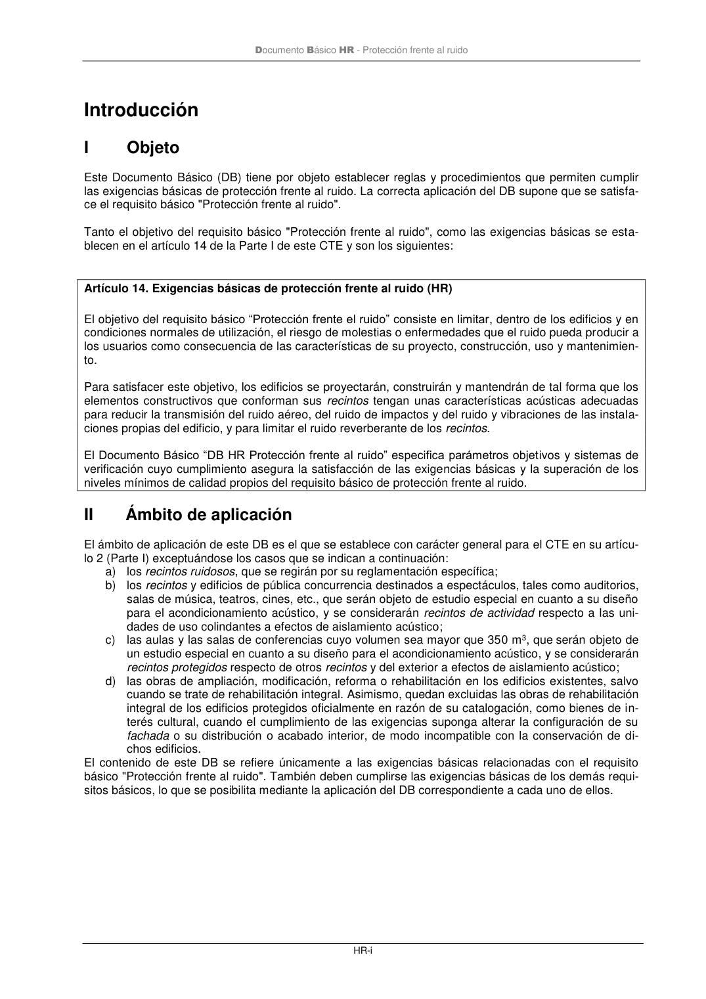

DB-HR · II Ámbito de aplicación · versión 2019-12-20 · capa oficial
Formatos: JSON compacto · Markdown · PDF fuente
Ámbito del documento · texto del ámbito · documento y tablas
ID técnico a0008 · PDF pág. 3-4 · jerarquía no validada por persona · contrastado con el literal de la página 3 (candidato tipográfico); no validado por persona · padre: raíz
II Ámbito de aplicación Ámbito de aplicación El ámbito de aplicación de este DB es el que se establece con carácter general para el CTE en su artícu- lo 2 (Parte I) exceptuándose los casos que se indican a continuación: a) los recintos ruidosos, que se regirán por su reglamentación específica; b) los recintos y edificios de pública concurrencia destinados a espectáculos, tales como auditorios, salas de música, teatros, cines, etc., que serán objeto de estudio especial en cuanto a su diseño para el acondicionamiento acústico, y se considerarán recintos de actividad respecto a las uni- dades de uso colindantes a efectos de aislamiento acústico; c) las aulas y las salas de conferencias cuyo volumen sea mayor que 350 m3, queserán objeto de un estudio especial en cuanto a su diseño para el acondicionamiento acústico, y se considerarán recintos protegidos respecto de otros recintos y del exterior a efectos de aislamiento acústico; d) las obras de ampliación, modificación, reforma o rehabilitación en los edificios existentes, salvo cuando se trate de rehabilitación integral. Asimismo, quedan excluidas las obras de rehabilitación integral de los edificios protegidos oficialmente en razón de su catalogación, como bienes de in- terés cultural, cuando el cumplimiento de las exigencias suponga alterar la configuración de su fachada o su distribución o acabado interior, de modo incompatible con la conservación de di- chos edificios. El contenido de este DB se refiere únicamente a las exigencias básicas relacionadas con el requisito básico "Protección frente al ruido". También deben cumplirse las exigencias básicas de los demás requi- sitos básicos, lo que se posibilita mediante la aplicación del DB correspondiente a cada uno de ellos. Documento Básico HR - Protección frente al ruido HR-ii

PDF fuente redistribuible: copia fiel enlazada en esta página (SHA256 verificado).